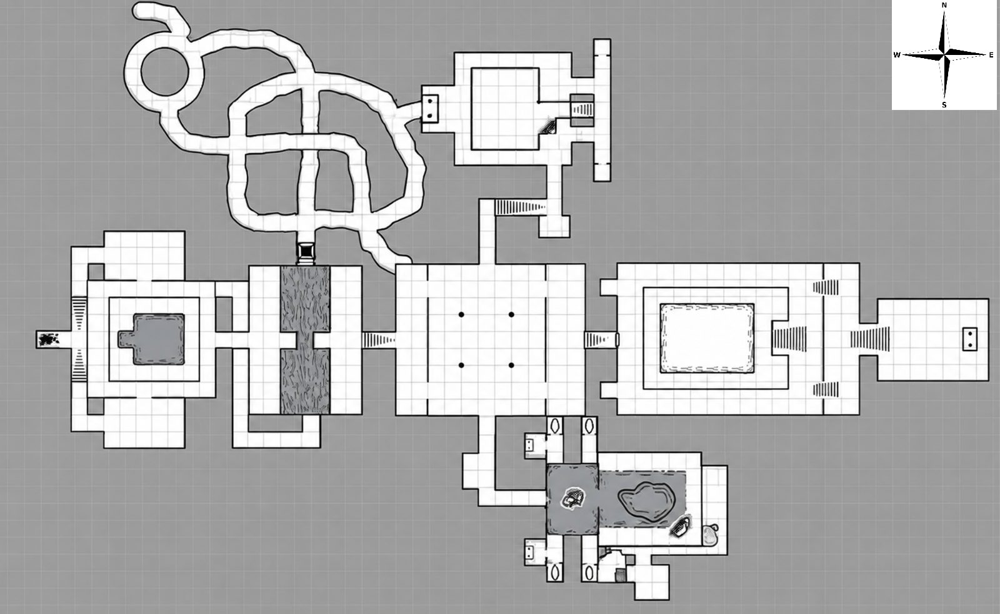
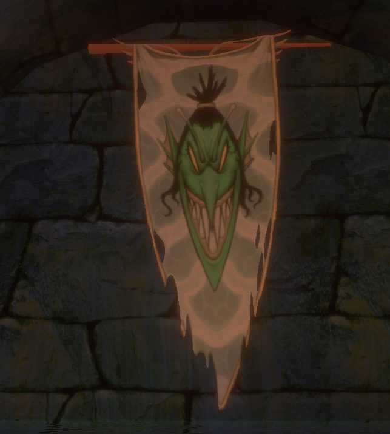

Grimtide Sanctum
Grimtide Sanctum is a cavernous dungeon found under a small atoll in shallow shoals.
Map


Named mobs
| Named | Lvl | Race / class | Where | Known loot (hover) |
|---|---|---|---|---|
| Vesska the Bloodbound | 50 | Goblin / Shadow Knight | - | Rimelea Board, Grimtide Odon, Redgut Longblade, Vesska's Thorn, Faceguard of the Torturer, Torturer's Thorn Shoulders |
| Bloatbelly | 50 | Ghoul | - | Bloated Seal, Mask of the Drowned |
| Devourhymn Glomenda | 50 | Goblin / Bard | - | Hydrophone Drum, Grimtide Odon, Mawchant Leather Mantle, Mawchant Rite Vest |
| Braggla the Spawnkeeper | 50 | Goblin | - | Mantle of the Sharkmother, Grimtide Odon, Sharkmother Trousers, Stitched Scrap Vambrace |
| Tidecaller Selka | - | Goblin | - | Tidecaller's Rituals, Grimtide Sanctum Key |
| Silent Nirra | - | - | Whisperless Veil |
Mobs & NPCs (camps by level)
Rows with a level are huntable camps; rows without are usually town NPCs or not yet documented.
| Name | Lvl | Race | Class | Where | Notes |
|---|---|---|---|---|---|
| a Grimtide deepseeress | 47-49 | Goblin | - | - | |
| a Grimtide echohexer | 47-49 | Goblin | Wizard | - | |
| a Grimtide fangbearer | 47-49 | Goblin | Rogue | - | |
| a Grimtide kelpweaver | 47-49 | Goblin | Enchanter | - | |
| a Grimtide moondrowner | 47-49 | Goblin | - | - | |
| a Grimtide reefshaper | 47-49 | Goblin | - | - | |
| a Grimtide shellcaller | 47-49 | Goblin | Elementalist | - | |
| a Grimtide tidewatcher | 47-49 | Goblin | - | - | |
| a sanctum elemental | 47-49 | Elemental | - | - | |
| a sanctum shark | 47-49 | Shark | - | - | |
| a slithering serpent | 47-49 | Snake | - | - |
Quests
| Quest | Reward | Giver | Min lvl |
|---|---|---|---|
| Example Quest Name | Example Reward | Example Quest Giver | - |
Gear that drops here
| Slot | Item | Key stats (wiki) | How to get | Lvl | Classes |
|---|---|---|---|---|---|
| Primary, Secondary | Torch | Effect: Torch (Passive. Must Equip. Level: 1) | Quest: Pests at the Farm (Farmer Ammar, Night Harbor, min lvl 1) Vendor: A goods merchant — Night Harbor, Shallow Shoals; A greedy halfling — Night Harbor; A shifty elf — Evershade Weald Crafted: Survival (trivial X) Drop: A rotting skeleton (lvl 1) — Night Harbor, Noob Yard | 1 | All classes |
| Primary, Secondary | Rusty Steel Mace | DMG 13 / DLY 40 | Drop: a decaying drunk (lvl unconfirmed) — Glass Flats Drop: a fallen warden (lvl unconfirmed) — Glass Flats Drop: a herald (lvl unconfirmed) — Glass Flats Drop: an abyssal emissary (lvl ~48-50) — Glass Flats, - | 20 | BRD BST CLR DRU FTR INQ MNK PAL RNG ROG SHD SHM SPB |
| Head | Rusty Steel Plate Helm | AC 24 | Named drop: Rais Muzari (lvl 32) — Grain Cellar, - Drop: a Plagueborn watchman (lvl ~52-53) — Fallen Pass, Upper Saman Drop: a Plagueborn myrmidon (lvl ~54-55) — Fallen Pass, Upper Saman Drop: a Plagueborn maid (lvl ~52-53) — Fallen Pass, Upper Saman | 32 | CLR FTR INQ PAL SHD |
| Primary, Secondary | Cracked Elderwood Staff | DMG 11 / DLY 33 | Drop: a decaying drunk (lvl unconfirmed) — Glass Flats Drop: a risen reveler (lvl unconfirmed) — Glass Flats Drop: an ashen knight (lvl ~48-50) — Glass Flats, - Drop: a cult initiate (lvl 45) — Glass Flats, - | 42 | All classes |
| Primary, Secondary | Rusty Steel Axe | DMG 10 / DLY 42 | Drop: a risen reveler (lvl unconfirmed) — Glass Flats Drop: an ashen servant (lvl unconfirmed) — Glass Flats Drop: an abyssal emissary (lvl ~48-50) — Glass Flats, - Drop: a charred ranger (lvl unconfirmed) — Glass Flats | 42 | BST FTR INQ PAL RNG SHD SPB |
| Primary | Rusty Steel Battle Axe | DMG 17 / DLY 54 | Drop: a Plagueborn watchman (lvl ~52-53) — Fallen Pass, Upper Saman Drop: a Plagueborn servant (lvl ~52-53) — Fallen Pass, Upper Saman Drop: a Plagueborn noble (lvl ~52-53) — Fallen Pass, Upper Saman Drop: a Plagueborn myrmidon (lvl ~54-55) — Fallen Pass, Upper Saman | 42 | BST FTR INQ PAL SHD |
| Head | Rusty Steel Chain Coif | AC 16 | Drop: a skeletal footman (lvl -) — Glass Flats, - Drop: a wyrmseer vizier (lvl ~48-50) — Glass Flats, - Drop: a charred ranger (lvl unconfirmed) — Glass Flats Named drop: High Wyrmseer Valthrun (lvl 53) — Glass Flats, Inner Cultists | 42 | BRD CLR FTR INQ PAL RNG ROG SHD SHM |
| Shirt | Rusty Steel Chain Gambeson | no stats listed on wiki | Drop: a Plagueborn maiden (lvl ~52-53) — Fallen Pass, Upper Saman Named drop: Stablemaster Tomaz (lvl 52) — Fallen Pass, Lower Saman, Stables Drop: a Plagueborn stablehand (lvl ~52-53) — Fallen Pass, Upper Saman Drop: a Plagueborn servant (lvl ~52-53) — Fallen Pass, Upper Saman | 42 | BRD CLR FTR INQ PAL RNG ROG SHD SHM |
| Neck | Rusty Steel Chain Gorget | AC 5 | Drop: a Grimtide fangbearer (lvl 47-49) — Grimtide Sanctum, - Drop: a drowned knight (lvl 52) — Glass Flats, - Drop: an abyssal emissary (lvl ~48-50) — Glass Flats, - Drop: a fallen freeman (lvl -) — Glass Flats, - | 42 | BRD CLR FTR INQ PAL RNG ROG SHD SHM |
| Face | Rusty Steel Chain Mask | AC 5 | Drop: a Plagueborn watchman (lvl ~52-53) — Fallen Pass, Upper Saman Drop: a Plagueborn myrmidon (lvl ~54-55) — Fallen Pass, Upper Saman Drop: a Plagueborn housewarden (lvl ~42-44) — Fallen Pass, Elder Drake area Drop: a Plagueborn servant (lvl ~52-53) — Fallen Pass, Upper Saman | 42 | BRD CLR FTR INQ PAL RNG ROG SHD SHM |
| Waist | Rusty Steel Chain Waistguard | AC 5 | Drop: a Plagueborn watchman (lvl ~52-53) — Fallen Pass, Upper Saman Drop: a Plagueborn myrmidon (lvl ~54-55) — Fallen Pass, Upper Saman Drop: a Plagueborn stablehand (lvl ~52-53) — Fallen Pass, Upper Saman Drop: a Plagueborn maid (lvl ~52-53) — Fallen Pass, Upper Saman | 42 | BRD CLR FTR INQ PAL RNG ROG SHD SHM |
| Primary, Secondary | Rusty Steel Dagger | DMG 8 / DLY 24 | Drop: a Grimtide moondrowner (lvl 47-49) — Grimtide Sanctum, - Drop: a Grimtide kelpweaver (lvl 47-49) — Grimtide Sanctum, - Drop: a Grimtide tidewatcher (lvl 47-49) — Grimtide Sanctum, - Drop: an ashen knight (lvl ~48-50) — Glass Flats, - | 42 | ARC BRD BST ELE ENC FTR INQ NEC RNG ROG SHD SHM SPB WIZ |
| Primary | Rusty Steel Great Scythe | DMG 19 / DLY 46 | Drop: a Plagueborn servant (lvl ~52-53) — Fallen Pass, Upper Saman Drop: a Plagueborn maiden (lvl ~52-53) — Fallen Pass, Upper Saman Named drop: Felix Rathmere (lvl 45) — Fallen Pass, - Drop: a Plagueborn evoker (lvl unconfirmed) — Fallen Pass | 42 | BST DRU FTR INQ NEC RNG SHD SPB |
| Secondary | Rusty Steel Kite Shield | AC 18 | Drop: a skeletal footman (lvl -) — Glass Flats, - Drop: a veiled emissary (lvl ~48-50) — Glass Flats, - Drop: an abyssal emissary (lvl ~48-50) — Glass Flats, - Drop: a tormented guardian (lvl unconfirmed) — Glass Flats | 42 | BRD CLR FTR INQ PAL RNG SHD |
| Primary | Rusty Steel Long Spear | DMG 15 / DLY 48 | Drop: a sand giant raider (lvl ~45) — Vale of Zintar, Fishing Camp Drop: a sand giant bandit (lvl ~45) — Vale of Zintar, Giant City, Fishing Camp Drop: a sand giant suncaller (lvl ~54-57) — Vale of Zintar, Giant City Drop: a Grimtide deepseeress (lvl 47-49) — Grimtide Sanctum, - | 42 | BRD BST FTR INQ RNG ROG SHD SHM |
| Primary, Secondary | Rusty Steel Longsword | DMG 9 / DLY 38 | Drop: a skeletal archer (lvl unconfirmed) — Glass Flats Drop: a haunted traveler (lvl unconfirmed) — Glass Flats Drop: an immolated grovekeeper (lvl unconfirmed) — Glass Flats Drop: a skeletal footman (lvl -) — Glass Flats, - | 42 | ARC BRD BST FTR INQ PAL RNG ROG SHD SPB WIZ |
| Primary | Rusty Steel Maul | DMG 16 / DLY 52 | Drop: a skeletal reveler (lvl unconfirmed) — Glass Flats Drop: a risen servant (lvl unconfirmed) — Glass Flats Drop: a wyrmseer (lvl ~48-50) — Glass Flats, - Drop: a fallen warden (lvl unconfirmed) — Glass Flats | 42 | BRD BST CLR DRU FTR INQ MNK PAL RNG ROG SHD SHM SPB |
| Feet | Rusty Steel Plate Boots | AC 17 | Drop: a Plagueborn watchman (lvl ~52-53) — Fallen Pass, Upper Saman Drop: a Plagueborn myrmidon (lvl ~54-55) — Fallen Pass, Upper Saman Drop: a Plagueborn stablehand (lvl ~52-53) — Fallen Pass, Upper Saman Drop: a Plagueborn nobleman (lvl ~52-53) — Fallen Pass, Upper Saman | 42 | CLR FTR INQ PAL SHD |
| Back | Rusty Steel Plate Cloak | AC 6 | Drop: a Plagueborn watchman (lvl ~52-53) — Fallen Pass, Upper Saman Drop: a Plagueborn sentinel (lvl unconfirmed) — Fallen Pass Drop: a Plagueborn myrmidon (lvl ~54-55) — Fallen Pass, Upper Saman Drop: a Plagueborn housewarden (lvl ~42-44) — Fallen Pass, Elder Drake area | 42 | CLR FTR INQ PAL SHD |
| Hands | Rusty Steel Plate Gauntlets | AC 21 | Drop: a Plagueborn watchman (lvl ~52-53) — Fallen Pass, Upper Saman Named drop: Yvette Gardener (lvl 51) — Fallen Pass, Lower Saman Drop: a Plagueborn maiden (lvl ~52-53) — Fallen Pass, Upper Saman Drop: a Plagueborn servant (lvl ~52-53) — Fallen Pass, Upper Saman | 42 | CLR FTR INQ PAL SHD |
| Shoulders | Rusty Steel Plate Pauldrons | AC 22 | Drop: a Witchguard myrmidon (lvl unconfirmed) — Shallow Shoals Drop: a Grimtide moondrowner (lvl 47-49) — Grimtide Sanctum, - Drop: a cult initiate (lvl 45) — Glass Flats, - Drop: a skeletal footman (lvl -) — Glass Flats, - | 42 | CLR FTR INQ PAL SHD |
| Face | Rusty Steel Plate Visor | AC 6 | Drop: a tormented guardian (lvl unconfirmed) — Glass Flats Drop: an ashen servant (lvl unconfirmed) — Glass Flats Drop: a wyrmseer vizier (lvl ~48-50) — Glass Flats, - Drop: an abyssal emissary (lvl ~48-50) — Glass Flats, - | 42 | CLR FTR INQ PAL SHD |
| Primary, Secondary | Rusty Steel Scimitar | DMG 12 / DLY 36 | Drop: a skeletal reveler (lvl unconfirmed) — Glass Flats Drop: a charred grovekeeper (lvl unconfirmed) — Glass Flats Named drop: Master Tracker Lark (lvl 45) — Glass Flats, Lower Broken Tower Drop: a drowned knight (lvl 52) — Glass Flats, - | 42 | ARC BRD BST DRU FTR INQ PAL RNG ROG SHD SPB WIZ |
| Primary, Secondary | Rusty Steel Scythe | DMG 7 / DLY 28 | Drop: a Plagueborn watchman (lvl ~52-53) — Fallen Pass, Upper Saman Drop: a Plagueborn myrmidon (lvl ~54-55) — Fallen Pass, Upper Saman Drop: a Plagueborn servant (lvl ~52-53) — Fallen Pass, Upper Saman Drop: a Plagueborn hag (lvl -) — Fallen Pass, - | 42 | BST DRU FTR INQ NEC RNG SHD SPB |
| Primary, Secondary | Rusty Steel Shortsword | DMG 9 / DLY 26 | Drop: a skeletal reveler (lvl unconfirmed) — Glass Flats Drop: a charred grovekeeper (lvl unconfirmed) — Glass Flats Drop: a charred tracker (lvl unconfirmed) — Glass Flats Drop: an immolated grovekeeper (lvl unconfirmed) — Glass Flats | 42 | ARC BRD BST FTR INQ PAL RNG ROG SHD SPB WIZ |
| Primary, Secondary | Rusty Steel Spear | DMG 11 / DLY 34 | Drop: a Witchguard corruptor (lvl unconfirmed) — Shallow Shoals Drop: a Plagueborn maiden (lvl ~52-53) — Fallen Pass, Upper Saman Drop: a Plagueborn sentinel (lvl unconfirmed) — Fallen Pass Drop: a Plagueborn stablehand (lvl ~52-53) — Fallen Pass, Upper Saman | 42 | ARC BRD BST FTR INQ RNG ROG SHD SHM |
| Secondary | Rusty Steel Tower Shield | AC 22 | Drop: a sand giant raider (lvl ~45) — Vale of Zintar, Fishing Camp Drop: a sand giant geomancer (lvl ~54-57) — Vale of Zintar, Giant City Drop: a sand giant bandit (lvl ~45) — Vale of Zintar, Giant City, Fishing Camp Drop: a sand giant suncaller (lvl ~54-57) — Vale of Zintar, Giant City | 42 | FTR INQ PAL SHD |
| Primary, Secondary | Rusty Steel Trident | DMG 8 / DLY 32 | Drop: a Plagueborn watchman (lvl ~52-53) — Fallen Pass, Upper Saman Named drop: Felix Rathmere (lvl 45) — Fallen Pass, - Drop: Aidan Thrym (lvl unconfirmed) — Fallen Pass Drop: a Plagueborn housewarden (lvl ~42-44) — Fallen Pass, Elder Drake area | 42 | ARC BRD BST FTR RNG ROG SHD SHM |
| Primary | Rusty Steel War Lance | DMG 20 / DLY 48 | Drop: a Plagueborn watchman (lvl ~52-53) — Fallen Pass, Upper Saman Drop: a Plagueborn noblewoman (lvl unconfirmed) — Fallen Pass Named drop: Felix Rathmere (lvl 45) — Fallen Pass, - Drop: a Plagueborn maid (lvl ~52-53) — Fallen Pass, Upper Saman | 42 | FTR INQ PAL SHD |
| Primary, Secondary | Rusty Steel Warhammer | DMG 10 / DLY 30 | Drop: a Witchguard myrmidon (lvl unconfirmed) — Shallow Shoals Drop: a skeletal footman (lvl -) — Glass Flats, - Drop: a cult initiate (lvl 45) — Glass Flats, - Drop: an abyssal emissary (lvl ~48-50) — Glass Flats, - | 42 | BRD BST CLR DRU FTR INQ MNK PAL RNG ROG SHD SHM SPB |
| Waist | Tattered Linen Belt | AC 3 | Drop: a fallen warden (lvl unconfirmed) — Glass Flats Drop: a risen servant (lvl unconfirmed) — Glass Flats Drop: a visiting cultist (lvl ~48-50) — Glass Flats, - Drop: a crystallized suncaller (lvl -) — Glass Flats, - | 42 | All classes |
| Tattered Linen Bracer | AC 5 | Drop: a skeletal reveler (lvl unconfirmed) — Glass Flats Drop: a heretical zealot (lvl ~48-50) — Glass Flats, - Drop: a wyrmseer vizier (lvl ~48-50) — Glass Flats, - Drop: a shadowed scribe (lvl ~48-50) — Glass Flats, - | 42 | All classes | |
| Head | Tattered Linen Cap | AC 8 | Drop: a Witchguard corruptor (lvl unconfirmed) — Shallow Shoals Drop: Witchlord Kruurgal (lvl unconfirmed) — Shallow Shoals Drop: a Plagueborn watchman (lvl ~52-53) — Fallen Pass, Upper Saman Drop: a Plagueborn servant (lvl ~52-53) — Fallen Pass, Upper Saman | 42 | All classes |
| Back | Tattered Linen Cape | AC 3 | Drop: a skeletal reveler (lvl unconfirmed) — Glass Flats Drop: a haunted messenger (lvl unconfirmed) — Glass Flats Drop: a crushed blacksmith (lvl unconfirmed) — Glass Flats Drop: a haunted merchant (lvl -) — Glass Flats, - | 42 | All classes |
| Hands | Tattered Linen Gloves | AC 7 | Drop: a Plagueborn watchman (lvl ~52-53) — Fallen Pass, Upper Saman Named drop: Ivor Thrym (lvl 45) — Fallen Pass, Drake Keep Drop: a Plagueborn acolyte (lvl ~52-53) — Fallen Pass, Upper Saman Drop: a Plagueborn arcanist (lvl unconfirmed) — Fallen Pass | 42 | All classes |
| Neck | Tattered Linen Gorget | AC 5 | Drop: a skeletal reveler (lvl unconfirmed) — Glass Flats Drop: a charred grovekeeper (lvl unconfirmed) — Glass Flats Drop: a haunted messenger (lvl unconfirmed) — Glass Flats Drop: a crystallized suncaller (lvl -) — Glass Flats, - | 42 | All classes |
| Shoulders | Tattered Linen Mantle | AC 9 | Drop: a skeletal reveler (lvl unconfirmed) — Glass Flats Drop: an ashen servant (lvl unconfirmed) — Glass Flats Drop: a haunted merchant (lvl -) — Glass Flats, - Drop: a crystallized suncaller (lvl -) — Glass Flats, - | 42 | All classes |
| Chest | Tattered Linen Tunic | AC 10 | Drop: a skeletal reveler (lvl unconfirmed) — Glass Flats Drop: a ghastly peasant (lvl unconfirmed) — Glass Flats Drop: a risen servant (lvl unconfirmed) — Glass Flats Drop: a visiting cultist (lvl ~48-50) — Glass Flats, - | 42 | All classes |
| Face | Tattered Linen Veil | AC 3 | Drop: a decaying reservist (lvl -) — Glass Flats, - Drop: a haunted traveler (lvl unconfirmed) — Glass Flats Drop: an ebon acolyte (lvl unconfirmed) — Glass Flats Drop: an abyssal emissary (lvl ~48-50) — Glass Flats, - | 42 | All classes |
| Waist | Tattered Padded Leather Belt | AC 4 | Drop: a decaying drunk (lvl unconfirmed) — Glass Flats Drop: a skeletal archer (lvl unconfirmed) — Glass Flats Drop: a cult initiate (lvl 45) — Glass Flats, - Drop: a skeletal quartermaster (lvl unconfirmed) — Glass Flats | 42 | ARC BRD BST CLR DRU FTR INQ MNK PAL RNG ROG SHD SHM SPB |
| Back | Tattered Padded Leather Cloak | AC 4 | Drop: a charred peasant (lvl unconfirmed) — Glass Flats Drop: a tormented guardian (lvl unconfirmed) — Glass Flats Drop: a charred grovekeeper (lvl unconfirmed) — Glass Flats Drop: an apostle (lvl unconfirmed) — Glass Flats | 42 | ARC BRD BST CLR DRU FTR INQ MNK PAL RNG ROG SHD SHM SPB |
| Hands | Tattered Padded Leather Gloves | AC 11 | Drop: a Grimtide deepseeress (lvl 47-49) — Grimtide Sanctum, - Drop: a bloated corpse (lvl unconfirmed) — Grimtide Sanctum Drop: a bloated (lvl unconfirmed) — Grimtide Sanctum Drop: a risen servant (lvl unconfirmed) — Glass Flats | 42 | ARC BRD BST CLR DRU FTR INQ MNK PAL RNG ROG SHD SHM SPB |
| Legs | Tattered Padded Leather Leggings | AC 14 | Drop: a Plagueborn watchman (lvl ~52-53) — Fallen Pass, Upper Saman Drop: a Plagueborn acolyte (lvl ~52-53) — Fallen Pass, Upper Saman Named drop: Dougal Bromm (lvl 52) — Fallen Pass, Lower Saman, Stables Drop: a Plagueborn myrmidon (lvl ~54-55) — Fallen Pass, Upper Saman | 42 | ARC BRD BST CLR DRU FTR INQ MNK PAL RNG ROG SHD SHM SPB |
| Face | Tattered Padded Leather Mask | AC 4 | Drop: a drowned knight (lvl 52) — Glass Flats, - Drop: a cult initiate (lvl 45) — Glass Flats, - Drop: a tormented guardian (lvl unconfirmed) — Glass Flats Drop: an apostle (lvl unconfirmed) — Glass Flats | 42 | ARC BRD BST CLR DRU FTR INQ MNK PAL RNG ROG SHD SHM SPB |
| Shoulders | Tattered Padded Leather Shoulderpads | AC 13 | Drop: a Plagueborn watchman (lvl ~52-53) — Fallen Pass, Upper Saman Drop: a Plagueborn stablehand (lvl ~52-53) — Fallen Pass, Upper Saman Drop: a Plagueborn blightcaller (lvl ~52-53) — Fallen Pass, Upper Saman Drop: a Plagueborn maiden (lvl ~52-53) — Fallen Pass, Upper Saman | 42 | ARC BRD BST CLR DRU FTR INQ MNK PAL RNG ROG SHD SHM SPB |
| Chest | Tattered Padded Leather Tunic | AC 15 | Drop: a charred grovekeeper (lvl unconfirmed) — Glass Flats Drop: a skeletal archer (lvl unconfirmed) — Glass Flats Drop: a cult initiate (lvl 45) — Glass Flats, - Drop: a tormented guardian (lvl unconfirmed) — Glass Flats | 42 | ARC BRD BST CLR DRU FTR INQ MNK PAL RNG ROG SHD SHM SPB |
| Shirt | Tattered Padded Leather Vest | no stats listed on wiki | Drop: a skeletal reveler (lvl unconfirmed) — Glass Flats Drop: a skeletal footman (lvl -) — Glass Flats, - Drop: a fallen warden (lvl unconfirmed) — Glass Flats Drop: a charred grovekeeper (lvl unconfirmed) — Glass Flats | 42 | ARC BRD BST CLR DRU FTR INQ MNK PAL RNG ROG SHD SHM SPB |
| Secondary | Worn Elderwood Buckler | AC 13 | Drop: a Plagueborn watchman (lvl ~52-53) — Fallen Pass, Upper Saman Drop: a Plagueborn sentinel (lvl unconfirmed) — Fallen Pass Drop: a Plagueborn maiden (lvl ~52-53) — Fallen Pass, Upper Saman Drop: a Plagueborn stablehand (lvl ~52-53) — Fallen Pass, Upper Saman | 42 | BRD BST CLR DRU FTR INQ PAL RNG ROG SHD SHM SPB |
| Primary | Worn Elderwood Great Staff | DMG 14 / DLY 46 | Drop: a haunted traveler (lvl unconfirmed) — Glass Flats Drop: a tormented guardian (lvl unconfirmed) — Glass Flats Drop: a wyrmseer vizier (lvl ~48-50) — Glass Flats, - Drop: an abyssal emissary (lvl ~48-50) — Glass Flats, - | 42 | BST CLR DRU ELE ENC FTR MNK NEC PAL SHM SPB WIZ |
| Feet | Tattered Linen Boots | AC 7 | Drop: a risen peasant (lvl -) — Glass Flats, - Drop: a decaying reservist (lvl -) — Glass Flats, - Drop: a drowned knight (lvl 52) — Glass Flats, - Drop: an abyssal emissary (lvl ~48-50) — Glass Flats, - | 43 | All classes |
| Wrist | Tattered Padded Leather Bracer | AC 9 | Drop: a skeletal archer (lvl unconfirmed) — Glass Flats Drop: a heretical zealot (lvl ~48-50) — Glass Flats, - Drop: a charred peasant (lvl unconfirmed) — Glass Flats Drop: a charred grovekeeper (lvl unconfirmed) — Glass Flats | 43 | ARC BRD BST CLR DRU FTR INQ MNK PAL RNG ROG SHD SHM SPB |
| Chest | Rusty Steel Chain Tunic | AC 22 | Drop: a Plagueborn watchman (lvl ~52-53) — Fallen Pass, Upper Saman Drop: a Plagueborn stablehand (lvl ~52-53) — Fallen Pass, Upper Saman Drop: a Plagueborn nobleman (lvl ~52-53) — Fallen Pass, Upper Saman Drop: a Plagueborn myrmidon (lvl ~54-55) — Fallen Pass, Upper Saman | 44 | BRD CLR FTR INQ PAL RNG ROG SHD SHM |
| Wrist | Rusty Steel Chain Wristguard | AC 12 | Drop: a skeletal footman (lvl -) — Glass Flats, - Drop: an abyssal emissary (lvl ~48-50) — Glass Flats, - Drop: a wyrmseer (lvl ~48-50) — Glass Flats, - Drop: a fallen freeman (lvl -) — Glass Flats, - | 44 | BRD CLR FTR INQ PAL RNG ROG SHD SHM |
| Primary | Rusty Steel Greatsword | DMG 15 / DLY 50 | Drop: a slime covered skeleton (lvl 49-51) — Sungreet Strand, - Drop: a haunted messenger (lvl unconfirmed) — Glass Flats Drop: an abyssal emissary (lvl ~48-50) — Glass Flats, - Drop: a whispering adept (lvl unconfirmed) — Glass Flats | 44 | ARC BRD BST FTR INQ PAL RNG SHD SPB |
| Shoulders | Rusty Steel Chain Shoulderguards | AC 18 | Drop: an ashen servant (lvl unconfirmed) — Glass Flats Drop: an apostle (lvl unconfirmed) — Glass Flats Drop: a wyrmseer (lvl ~48-50) — Glass Flats, - Drop: an ashen knight (lvl ~48-50) — Glass Flats, - | 45 | BRD CLR FTR INQ PAL RNG ROG SHD SHM |
| Neck | Rusty Steel Plate Collar | AC 5 | Drop: a Plagueborn watchman (lvl ~52-53) — Fallen Pass, Upper Saman Named drop: Felix Rathmere (lvl 45) — Fallen Pass, - Drop: a Plagueborn stablehand (lvl ~52-53) — Fallen Pass, Upper Saman Drop: a Plagueborn maid (lvl ~52-53) — Fallen Pass, Upper Saman | 45 | CLR FTR INQ PAL SHD |
| Legs | Rusty Steel Plate Greaves | AC 24 | Drop: a skeletal footman (lvl -) — Glass Flats, - Drop: an ashen knight (lvl ~48-50) — Glass Flats, - Drop: an abyssal emissary (lvl ~48-50) — Glass Flats, - Named drop: Hadir the Shipbreaker (lvl 46) — Vale of Zintar, Fisher Rock | 45 | CLR FTR INQ PAL SHD |
| Chest | Tattered Linen Robe | AC 10 | Drop: a skeletal reveler (lvl unconfirmed) — Glass Flats Drop: an ebon acolyte (lvl unconfirmed) — Glass Flats Drop: a whispering adept (lvl unconfirmed) — Glass Flats Drop: a fallen warden (lvl unconfirmed) — Glass Flats | 45 | ELE ENC NEC WIZ |
| Shirt | Tattered Linen Shirt | no stats listed on wiki | Drop: a skeletal archer (lvl unconfirmed) — Glass Flats Named drop: Ebon Scholar Myrddin (lvl 53) — Glass Flats, Inner Cultists Drop: a veiled emissary (lvl ~48-50) — Glass Flats, - Drop: an ebon acolyte (lvl unconfirmed) — Glass Flats | 45 | All classes |
| Feet | Rusty Steel Chain Boots | no stats listed on wiki | Drop: a Grimtide deepseeress (lvl 47-49) — Grimtide Sanctum, - Named drop: Devourhymn Glomenda (lvl 50) — Grimtide Sanctum, - Drop: an abyssal emissary (lvl ~48-50) — Glass Flats, - Drop: a wyrmseer (lvl ~48-50) — Glass Flats, - | 47 | BRD CLR FTR INQ PAL RNG ROG SHD SHM |
| Shark Control Gem | no stats listed on wiki | Drop: a sanctum shark (lvl 47-49) — Grimtide Sanctum, - | 47 | class unconfirmed | |
| Finger | Bloated Seal | STA +4, WIS +5, HP +20, Mana +20 | Named drop: Bloatbelly (lvl 50) — Grimtide Sanctum, - | 50 | BST CLR DRU PAL RNG SHM |
| Face | Faceguard of the Torturer | AC 10, STR +5, STA +7, SV Corruption +3 | Named drop: Vesska the Bloodbound (lvl 50) — Grimtide Sanctum, - | 50 | CLR FTR INQ PAL SHD |
| Secondary | Hydrophone Drum | CHA +5, HP +35, Mana +5 | Named drop: Devourhymn Glomenda (lvl 50) — Grimtide Sanctum, - | 50 | BRD |
| Shoulders | Mantle of the Sharkmother | AC 29, AGI +4, DEX +6, HP +25 | Named drop: Braggla the Spawnkeeper (lvl 50) — Grimtide Sanctum, - | 50 | ARC BRD BST DRU MNK RNG SPB |
| Face | Mask of the Drowned | AC 10, STA +7, WIS +4, SV Cold +3 | Named drop: Bloatbelly (lvl 50) — Grimtide Sanctum, - | 50 | BST CLR DRU PAL RNG SHM |
| Chest | Mawchant Rite Vest | AC 39, STA +5, AGI +3, DEX +5, CHA +3, HP +10 | Named drop: Devourhymn Glomenda (lvl 50) — Grimtide Sanctum, - | 50 | ARC BRD BST CLR DRU FTR INQ MNK PAL RNG ROG SHD SHM SPB |
| Primary | Redgut Longblade | DMG 12 / DLY 35, STR +8, SV Fire +1, SV Poison +4 | Named drop: Vesska the Bloodbound (lvl 50) — Grimtide Sanctum, - | 50 | ARC BRD BST FTR INQ PAL RNG ROG SHD SPB WIZ |
| Secondary | Rimelea Board | AC 26, STA +1, WIS +7, SV Disease +3, SV Elec +2 | Named drop: Vesska the Bloodbound (lvl 50) — Grimtide Sanctum, - | 50 | BRD CLR DRU FTR INQ PAL RNG SHD SHM |
| Finger | Ring of the Razorbrood | STR +5, STA +5, AGI +5, HP +15 | Named drop: Braggla the Spawnkeeper (lvl 50) — Grimtide Sanctum, - | 50 | BRD BST CLR DRU FTR INQ MNK PAL RNG ROG SHD SHM SPB |
| Legs | Sharkmother Trousers | AC 28, STA +6, WIS +5, Mana +10 | Named drop: Braggla the Spawnkeeper (lvl 50) — Grimtide Sanctum, - | 50 | ARC BRD BST CLR DRU FTR INQ MNK PAL RNG ROG SHD SHM SPB |
| Wrist | Stitched Scrap Vambrace | AC 19, STA +5, WIS +8 | Named drop: Braggla the Spawnkeeper (lvl 50) — Grimtide Sanctum, - | 50 | ARC BRD BST CLR DRU FTR INQ MNK PAL RNG ROG SHD SHM SPB |
| Shoulders | Torturer's Thorn Shoulders | AC 35, WIS +5, HP +25, Mana +15 | Named drop: Vesska the Bloodbound (lvl 50) — Grimtide Sanctum, - | 50 | BRD CLR FTR INQ PAL RNG ROG SHD SHM |
| Primary, Secondary | Tidecaller's Rituals | WIS +7, Mana +35 | Named drop: Tidecaller Selka (lvl -) — Grimtide Sanctum, - | any / ? | CLR DRU PAL SHM |
| Face | Whisperless Veil | AC 10, AGI +5, DEX +7, HP +10, Mana +5 | Named drop: Silent Nirra (lvl -) — Grimtide Sanctum, - | any / ? | MNK ROG |